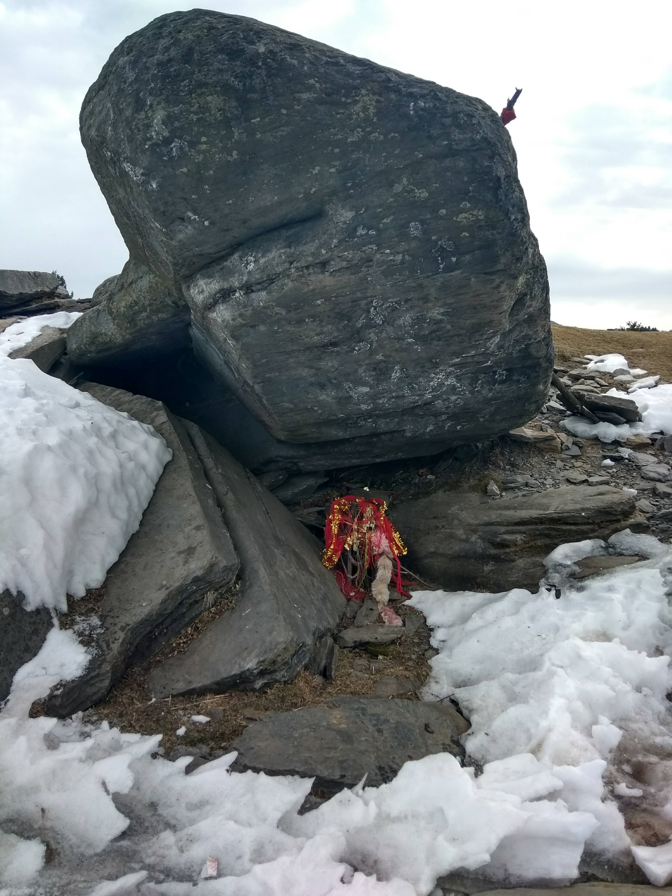
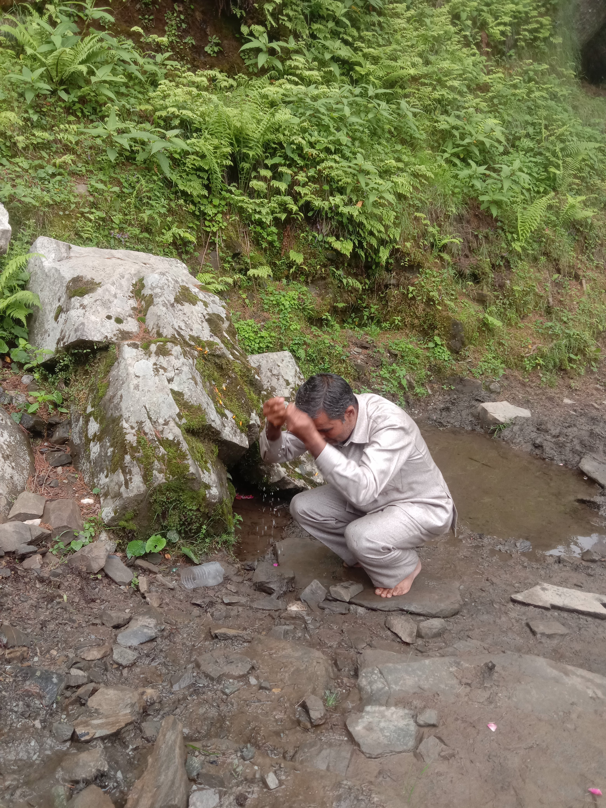
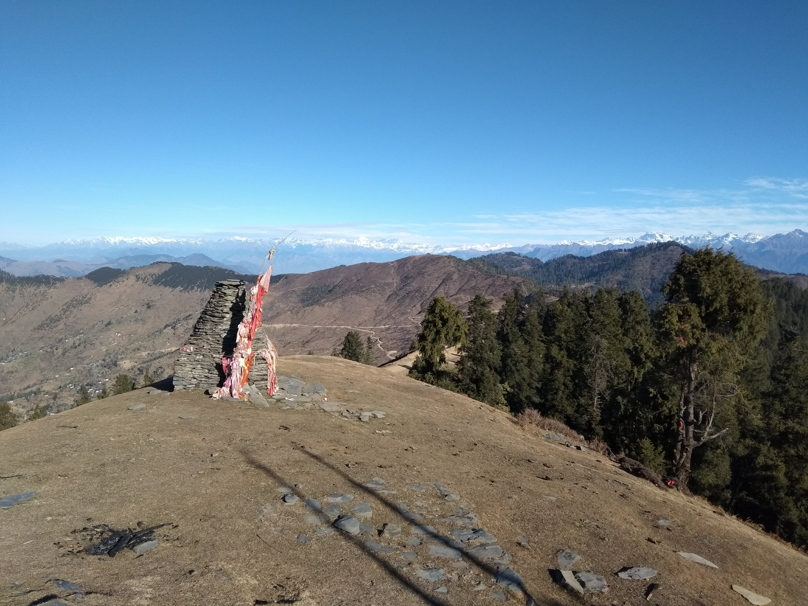
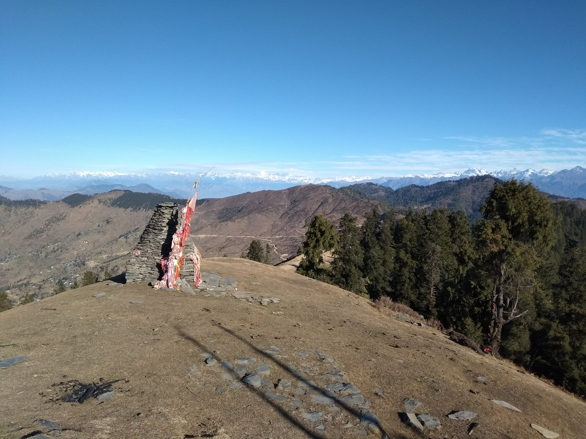

.jpeg)
King of Thousand Hills - Shyati Nag
पर्यटक की दृष्टि से उभरता हुआ धार्मिक स्थल - श्याटा धार
श्याटा धार जिला मंडी, हिमाचल प्रदेश , बाली चौकी से करीब पच्चास किलो मीटर दूर सराज क्षेत्र का एक उभरता हुआ पर्यटक स्थल हैं शहर की भाग-दौड़ से दूर,श्याटा धार दिव्य शक्तियों द्वारा संचालित एक ऐसी जगह है जहां अन्वेषण करने के लिए अविश्वसनीय स्थल हैं। खूबसूरत नज़ारों वाला एक अनजाना पर्यटन स्थल, शेटधार दुनिया भर के लोगों को आकर्षित करता है। ईश्वर में आस्था रखने वाले लोगों को दैवीय शक्तियां भी आकर्षित करती हैं। टेढ़े-मेढ़े पहाड़ों से आच्छादित यह स्थान अविश्वसनीय हो जाता है। पर्यटन के लिए शेटधार पूरी तरह से अविश्वसनीय है।
शेटधर अन्वेषण करने के लिए एक अविश्वसनीय जगह है। भगवान शेट्टीनाग की दिव्य शक्ति से धन्य, शेटधार यात्रियों के लिए सबसे लोकप्रिय गंतव्य बनता जा रहा है। पर्वत, प्रकृति, दर्शनीय दृश्य और दैवीय शक्तियाँ यात्री के लिए यहाँ लम्बे समय तक ठहरना आसान बनाती हैं। शेटधार में, भगवान शेट्टीनाग का मंदिर, जिसे मुख्य आकर्षण कहा जाता है, हर दिन खुला रहता है। कई स्थानीय लोग भगवान को धन्यवाद देने या कभी-कभी देव शेटिनाग के माध्यम से अपनी इच्छाओं को पूरा करने के लिए यहां आते हैं। ऐसा देखा गया है कि देव शेटिनाग के महान प्रेम की हर इच्छा पूरी होती है।

अन्य स्तिथ धार्मिक स्थान
देव शेटिनाग के मंदिर के पास, कुछ अन्य दिव्य स्थान जैसे जोगी पत्थर, स्पेहानी मंदिर, स्पेणी धार, भुज मंदिर और सबसे प्रसिद्ध जोगनी माता स्थित हैं। जोगनी माता एक ऐसे स्थान पर स्थित है जो देव शेटिनाग के मंदिर को एक भव्य मार्ग प्रदान करता है। चारों तरफ से भक्त फूल चढ़ाते हैं, आस्था का धागा। और बदले में भक्तों को ढेर सारा प्यार मिलता है।
प्रचलित कथा
श्याटा धार के दाहिनी ओर जोगी पत्थर स्थित है। यह स्थान दैवीय शक्तियों के लिए प्रसिद्ध है। कहा जाता है कि देवता यहां स्वयं सफाई करने आते हैं। स्थानीय लोगों के अनुसार इस जगह में औषधीय गुण भी हैं। इस बात के पीछे एक कहानी है। बहुत पहले, एक चरवाहा था जो अपनी संपत्ति के साथ था। चलते-चलते किसी तरह वह गिर पड़ा और उसके दोनों हाथों की उंगलियां अलग हो गईं। उसने अपने हाथों को हरी घास से रगड़ा और एक चमत्कार हुआ, उसकी सारी उंगलियाँ जैसे की तैसी हो गईं। साथ ही इस जगह के नाम को लेकर भी एक कहानी है। हमारे बुजुर्गों ने बताया कि इस जगह का नाम एक योगी के यहां खड़े होने के बाद पड़ा।

क्या हैं गाडू ढालने की प्रक्रिया ?
श्याटा धार मैं स्तिथ जोगी पाथर में प्रत्येक वर्ष कई देवी - देवता अपनी शक्ति अर्जित करने आते हैं , कहा जाता हैं की जब देवी - देवता युद्ध में हार जाये या चोटिल हो जाये तो जोगी पाथर आकर शक्तियां अर्जित करते हैं शक्ति अर्जित करने की प्रक्रिया को गाडू ढालना कहा जाता हैं , जिसमे गाडू पानी नाम धार्मिक स्थान से पानी लोटे में ले आया जाता हैं और देवता जोगी पाथर जो की एक प्थर की शीला हैं उसपर रखा जाता हैं । गाडू ढालने की प्रक्रिया में तीन से चार गुर ( देवता के शिष्य जिनके माद्यम से बो लोगो से संभाद करते हैं ) देवता के साथ बैठते हैं और खूब ढोल नगारो से देवते की पूजा की जाती हैं और यह पूजा तब तक की जाती हैं जब तक जोगी पाथर पर रखे लोटे पर उबाल ना आ जाये। जैसे ही लोटे में रखे पानी मैं उबाल आ जाये और देवते की शक्तिया गुर में आ जाये देवते का गुर उठ कर पानी के लोटे को उठा के देवते के मुख का स्नान करवाता हैं तत्पश्चात देवता श्रद्धालुओं को आशिर्बाद देते हैं । इस प्रक्रिया मैं आधे घंटे से ले कर एक दिन का समय लगता हैं, देव शयटी नाग जी स्वयं किसी विशेष कार्य की पूर्ति के बाद भी गाडू ढालते हैं।
गाडू ढालने वाला रहस्य्मय पानी
गाडू ढालने की प्रक्रिया में जिस पानी का जिक्र किया गया वो पानी कोई आम पानी नहीं होता , बो पानी श्याटा धार से ठीक निचे एक - सौ मीटर की दुरी से लाया जाता हैं और वहीं जोगी पाथर से इसकी दुरी करीब दो-सौ मीटर होगी। इस पानी मैं बहुत सी औषदीयां पायी जाती हैं और सबसे ख़ास बात यह पानी देव श्याटी नाग की स्वयं की देन हैं। इस पानी की मुख्य विषेशता यह हैं की यदि आपको किसी प्रकार का शरीक रोग हो तो इस पानी से नहा कर ठीक हो जाता हैं , बहुत से पर्यटक और श्रद्धालु इस स्थान के बारे मैं कम ही जानते हैं यहाँ पर जो शांति आप अनुभभ करेंगे बो शांति शायद ही और कहीं जगह आप अनुभभ करे। यह तीर्थ चारो औरो से देवदार के सुन्दर और लम्बे लम्बे वृषो से गिरा हुआ हैं जो इसे और भी एकांत बना देता हैं, देव श्याटी नाग की कृपया से कैसा भी मौसम आये यह दिव्य पानी हमेशा ऎसे ही कल - कल बहता रहता हैं

प्रत्येक बर्ष जाते हैं श्रदलुओं को अशिर्बाद देने मंडी शिवरात्रि
सराजघाटी के देव शैटी नाग को शेषनाग के रूप में माना जाता है। देवता की पूरी सराज घाटी में एक अलग पहचान है। यह देवता नियमित रूप से शिवरात्रि महोत्सव में शिरकत करते हैं। शैटी देवता राजाओं के समय से ही छोटी काशी आते हैं और शिवरात्रि महोत्सव के दौरान निकलने वाली जलेबों में भी देव शैटी नाग शिरकत करते हैं। इस जलेब में अधिकतर देवताओं को शामिल होने का अवसर नहीं मिलता, लेकिन शैटी नाग जलेब में भी शिरकत करते हैं। यह एक ऐसे देवता हैं जो राज माधव राय मंदिर में शिवरात्रि के दौरान निवास करते हैं। देव शैटी नाग के अलावा देवी अंबिका व देवी जुफर की जालपा भी राज माधव राय मंदिर में निवास करते हैं। यहां निवास करने वाले देवता भी चु¨नदा ही हैं। जलेब में डाहर की अंबिका माता और देव शैटी नाग साथ-साथ चलते हैं। देवता के कारदार छापे राम ने कहा कि शैटी नाग का मूल स्थान शैटधार में स्थित है वहां पर देवता की पैड़ी है। पैड़ी के इतिहास के बारे में वर्तमान पीढ़ी को अधिक जानकारी नहीं हैं। इसके अलावा देवता की कोठी बुंग गांव में स्थित है। वहीं पर देवता का रथ रहता है। देव शैटी नाग की विशेषता यह है कि अगर कोई उनकी पवित्रता को भंग कर दे तो देवता रूठ जाते हैं। उसी प्रकार अगर जलेब के समय भी अगर प्रशासन द्वारा कोई गड़बड़ की जाती है तो देवता रुष्ठ होते हैं।


 
